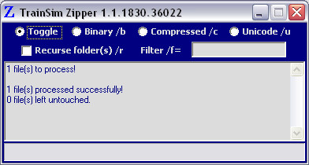

You can see that this wagon is "floating" above the rails when viewed in the sim, or, in this case in Shape Viewer.
First uncompress the files using Zipper or Shape File Manager (SFM). Note however that shifting this shape in SFM can lead to oval shaped wheels: in addition the whole wagon is raised/lowered which affects both appearance and coupler height.
A better way is to simply move the bogies. Open the uncompressed .S file in a unicode-aware editor such as ConTEXT, Wordpad or Ultra-Edit.
Search for "matric". You will find something like this:
The second from last BOGIEn value (in this case the highlighted 0.540607) determines its height and with it its wheels. Increasing this value will raise the bogies and their wheels and vice versa. You will generally only need to alter this value in increments of 0.01 or less for a total movement of about 0.05-0.075. Adjust the values in ConTEXT, save, then switch to your SV windows and press F5 to refresh the view and check on your progress: repeat as required until you achieve the desired result.
When we reach values such as this........

..... the wheels now sit on the track, like this:
When you're satisfied with your results, SAVE the .S file.
Most wagons or locos from the same supplier usually suffer from the same incorrect settings and having worked out one should also work for the others, but don't bet on it ! Check each one before compressing the shape file again.
Finally "drag-n-drop" the .S file from Explorer onto Zipper to recompress the altered .S file.
